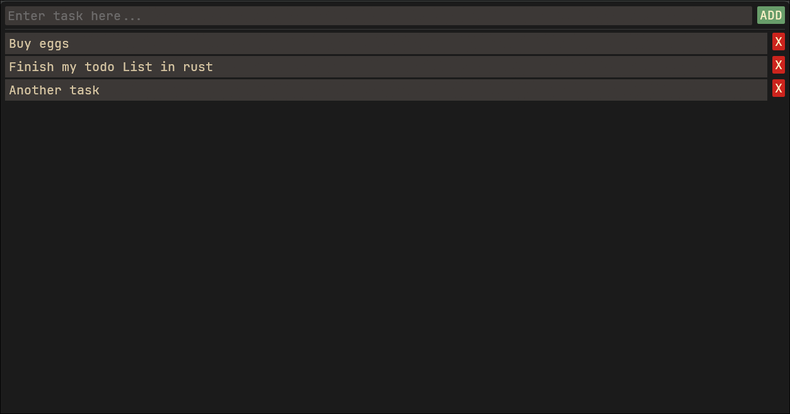

Cicin2837511
A low-level application developer and Linux user
I am a beginner programmer who loves learning low-level languages and fast minimal programs that don't do more than they need to. I started programming webpages when I was about 10 years old, then I dropped it for a while, after that I really got into it properly this time.
I use Linux and like to get really deep into its internals and how it works; I like having deep control over my system. I dislike when programs do too much and have too many unnecessary functions, because it usually makes them quite slow and complex in ways that are often not needed. The way I like to learn is to immediately start with projects that are "too hard" and try to understand everything as best as I can, I find this works as a great method to learn (watching 10 hour courses doesn't).
I write everything in vim and it's made my programming experience a lot more pleasant; it can make you much faster so you can focus on the code and logic more.
Skills
- C - Comfortable with the language itself for small projects and personal tools, this is my main language that I use the most. I understand the concepts well, but I don't have much experience with real production code or big projects, I am purely self-taught and never collaborated on anything. My biggest project is a linux terminal emulator written with SDL3, it can only run basic text based commands, most CLI applications break down.
- Linux - I know how the system is constructed, how the root file system is organized, about how bootloaders and init systems and the kernel work. I can program with it well and do many things to it at the low level. I don't know much about networking or operating servers in practice, I have no experience with that.
- Rust - Wrote basic applications only, used a few libraries in very small projects (300-500 lines max.) I love it right now and I'm trying to learn it well.
- C++ - Basic usage from C and beyond. Basics only, could learn easily, not very proficient at my current point.
Projects
todo-list
A simple todo list application written in rust with egui. You can add or delete tasks, that's about it. Very simple, my first rust project.

Contacts
github: github
e-mail: cicin.2837512@gmail.com